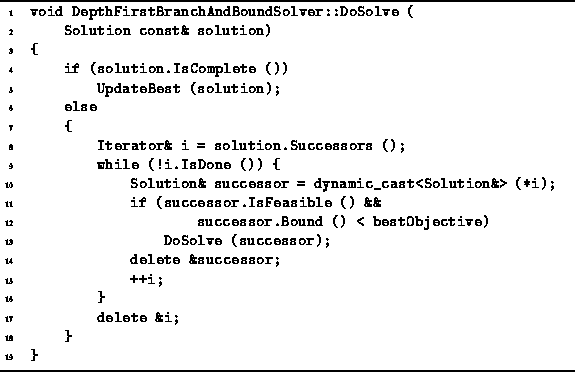

Data Structures and Algorithms
with Object-Oriented Design Patterns in C++
Data Structures and Algorithms
with Object-Oriented Design Patterns in C++
Only a relatively minor modification of the simple,
depth-first solver shown in Program  is needed
to transform it into a branch-and-bound solver.
Program gives the implementation of the DoSolve
routine of the DepthFirstBranchAndBoundSolver class.
is needed
to transform it into a branch-and-bound solver.
Program gives the implementation of the DoSolve
routine of the DepthFirstBranchAndBoundSolver class.

Program: DepthFirstBranchAndBoundSolver ClassDoSolve Member Function Definition
The only difference between the simple, depth-first solver and the branch-and-bound version is the if statement on lines 11-12. As each node in the solution space is visited two tests are done: First, the IsFeasible routine is called to check whether the given node represents a feasible solution. Next, the Bound routine is called to determine the lower bound on the best possible solution in the given subtree. The second test determines whether this bound is less than the value of the objective function of the best solution already found. The recursive call to explore the subtree is only made if both tests succeed. Otherwise, the subtree of the solution space is pruned.
The degree to which the solution space may be pruned depends strongly on the nature of the problem being solved. In the worst case, no subtrees are pruned and the branch-and-bound routine visits all the nodes in the solution space. The branch-and-bound technique is really just a heuristic --sometimes it works and sometimes it does not.
It is important to understand the trade-off being made: The solution space is being pruned at the added expense of performing the tests as each node is visited. The technique is successful only if the savings which accrue from pruning exceed the additional execution time arising from the tests.
 Copyright © 1997 by Bruno R. Preiss, P.Eng. All rights reserved.
Copyright © 1997 by Bruno R. Preiss, P.Eng. All rights reserved.